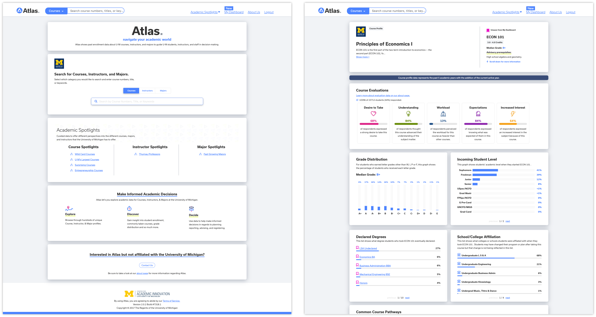

Atlas Course Collection Redesign
@Center of Academic Innovation, University of Michigan
Project Type
UX Design internship
Role
UX Design intern
Duration
1 month
Skills
Wireframing, Prototyping, Conceptual Model, Sketching, Competitive Analysis, User Interview, Usability test
Intro
UX Design internship
This summer I worked at Umich Academic Innovation as a UX design intern. I worked on Problem Routelle and Atlas to design new features and improve usability. I took problems from a broad idea to high fidelity versions and prototyped the user interactions. I worked closely with several designers, researchers and engineers but mainly my amazing mentor David Corneail , who pushed me to grow as a designer and learn more about how to tackle a problem and design a complete end-to-end flow.
Atlas
Atlas is a data visualization tool that shows past enrollment data about U-M courses, instructors, and majors to guide U-M students, instructors, and staff in decision-making. Atlas is used by more than 85% U of M students.
Problem
Response to users' need
From the user research we conducted, we learned that some student users would like a feature that allows them to save courses into different collections, e.g. required courses for pre-med, or for a particular grad school, so they can share those with students. Some advisors also said it would be helpful for them when sharing academic paths to students.
Intial Design
In the initial design, users can save courses on the dashboard in a single collection. While the number of courses increases, the collection might become disordered.
Design Overview
Mutiple list course collection
The new collection design allows users to save multiple lists of courses in the dashboard that will help them organize their course collections in a more organized way.

Design Change
Design Change 1: Simplify Course Card Interaction
I redesigned the course card to enable interactions such as “move to new collection”, ”copy to another collection” etc. I initially design a drop-down menu and I changed it to buttons on the course care to simplify the user flow.
Design Change 2: Streamline new collection created process
The initial process of creating a new collection includes a series of modules. I redesign the process and now when users click the “Create new collection” button, a new collection will be created with a default name and users can change the collection later.
Design Change 3: Simplify Course Card Interaction
Considering when backpacking for next semester, student users usually have a number of tabs opening at the same time, I removed the drop-down menu when users want to save a course to make it easier for users to save a course
CONCLUSION & REFLECTION
Interaction over perfection
During the design process of this project, I sometimes got stuck because I focused too much on perfection design. I learned that the users do not care if you are using the right blue and correct font sizes from the design system. As product designer, I need to design the idea to satisfy the bigger picture requirements enough to put in front of users or stakeholders to stimulate feedback. This will get you meaningful insights to achieve your design goals.